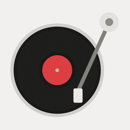
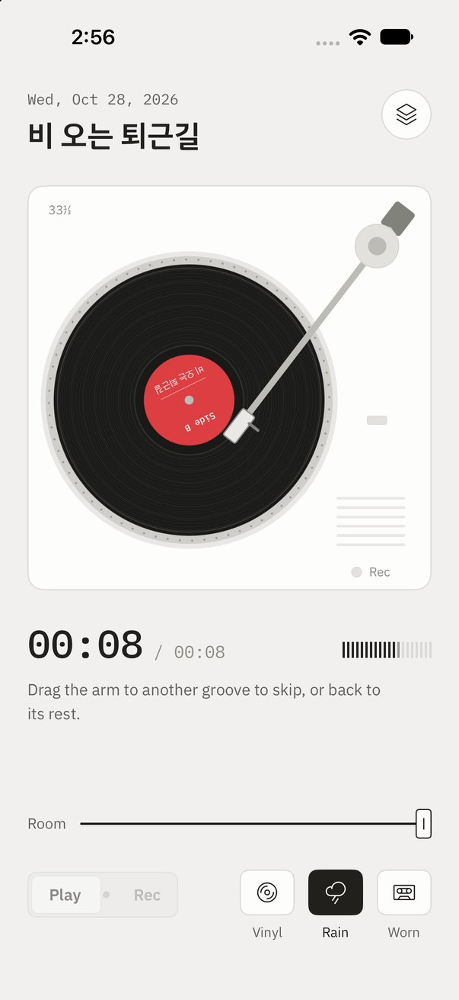
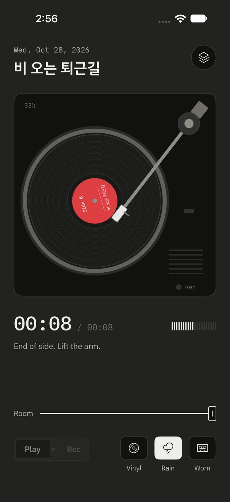

Side BSide B is a voice diary you keep on a turntable. Drop the needle on a blank to record. Drop it on a side to hear it again, with the crackle of the record and the rain outside mixed in as it plays.


Four things, in the order you'll meet them.
Drag the tonearm off its rest and lay it on the record. You feel it land, a heavy knock through the glass, and the side begins.
Flip the switch to Rec and drop the needle on the blank. The grooves are cut from the edge inward while you talk. Lift the arm to finish and name the side.
Your voice is never altered on disk. Surface noise and rain are mixed in each time you play, so you can switch between Vinyl, Rain and Worn whenever you like.
Pick the arm up and set it down further in to skip ahead. At the end it rides the run-out groove until you lift it.
Side B has no server. Recordings never leave the device.
Audio and titles are saved in the app's own storage on your iPhone.
The crackle and rain are synthesized for the app, not sampled, and mixed in real time.
The arm has weight. Drop, lift and rest each have their own feel.
하루를 말하고, 레코드판으로 다시 듣는 음성 일기
톤암을 받침에서 들어 판 위에 올려놓으면 묵직한 진동과 함께 재생이 시작돼요.
스위치를 녹음으로 바꾸고 빈 판에 바늘을 내리면, 말하는 동안 바깥에서 안쪽으로 홈이 새겨져요. 암을 들면 녹음이 끝나고 이름을 붙여요.
목소리 파일은 그대로 두고, 판 긁히는 소리와 빗소리는 재생할 때 실시간으로 섞어요. 바이닐·빗소리·낡은 판을 언제든 바꿀 수 있어요.
암을 들어 안쪽에 내려놓으면 그만큼 건너뛰어요. 끝에 닿으면 들어 올릴 때까지 마지막 홈을 돌아요.
서버도 계정도 없어요. 녹음은 이 iPhone 밖으로 나가지 않아요.